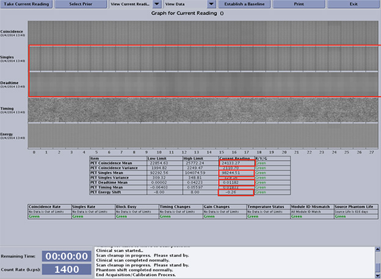
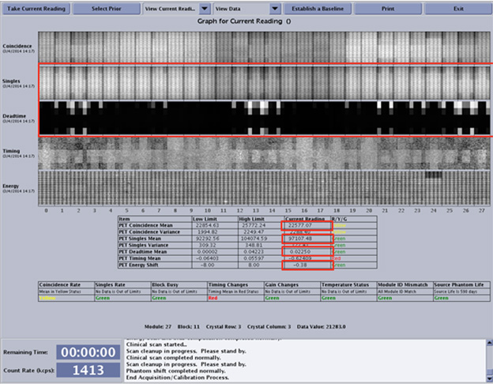
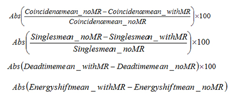

- 00000018WIA308E1130GYZ
- id_152710634.8
- Jul 24, 2025 7:01:22 PM
Block Busy Functional Test
Prerequisites
| Personnel requirements | |||
|---|---|---|---|
| Required persons | Preliminary requirements | Procedure | Finalization |
| 1 | - | 30 minutes | - |
| Tools and test equipment | |||
|---|---|---|---|
| Item | Quantity | Part number | Manufacturer |
| PET/MR Annulus Phantom Note Contains germanium-68 (Ge-68). | 1 | 5494456 |
Sanders Medical |
| Annulus Phantom Holder | 1 | 5476933 | - |
| Body TLT Sphere for 3.0T (Pink Solution) | 1 | 2360025 | - |
| Body TLT Loader for 3.0T | 1 | 2360037 | - |
| Safety | ||||
|---|---|---|---|---|
|
Before working in any GE HealthCare MR suite or doing any GE HealthCare service procedure, you must:
If you have any safety concerns at any time, do not begin work or immediately stop work and move to a safe location. Immediately contact your supervisor or site safety officer for instructions on how to proceed. | ||||
| ||||
About this task
Overview
The block busy functional test looks for detectors that are either oversaturated with radio frequency (RF) or too busy to respond. These conditions affect PET image quality.
The block busy functional test is a functional check and not a calibration. This test evaluates RF interference from the MR process with the PET detectors. MR RF interference affects image quality and is evident by singles drops and block busy events.
DQA Setup with MR
Procedure
Results Interpretation
About this task
Compare the data between the DQA check without MR and the DQA check with MR (both shown below). The system should meet the following specs:
-
Mean coincidence change between MR on and MR off (as a percentage of MR off) will be less than 10%. If this value exceeds 20%, contact service to troubleshoot the RF interference.
-
Mean singles change per system between MR on and MR off (as a percentage of MR off) will be less than 2%.
-
Mean block busy per system change between MR on and MR off will be less than 2%.
-
Mean energy peak shift per system with MR will be less than 10%. If this value exceeds 20%, contact service to troubleshoot the RF interference.
NotePET scan time increases with the amount of RF interference present.
Figure 6. Example of DQA without MR 
Figure 7. Example of DQA with MR 
Figure 8. Interaction DQA Data Analysis Calculation 
| Disposition | Coincidence | Singles | Dead Time (Block Busy) | Energy Shift |
| No MR | 24133 | 98245 | 0.012 | -0.26 |
| With MR | 22577 | 97107 | 0.023 | -0.38 |
| Difference (%) | 6.5 | 1.1 | 1.1 | -0.12 |
| Specification (%) | < 10 | < 2 | < 2 | < 10 |
Finalization
Finalization
-
Return the body TLT sphere and holder to their storage location and the annulus phantom and holder to the safe.
-
Edit the mgd_stage file and remove the “T.”
-
Do another TPS reset.
-
Do an MR-PET hello-goodbye scan. See Calibration Sequence for PET/MR for the complete PET calibrations workflow.